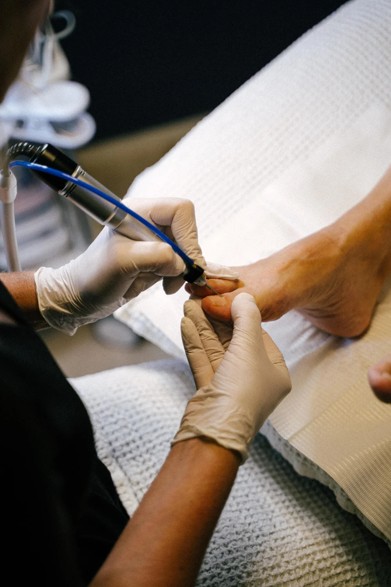
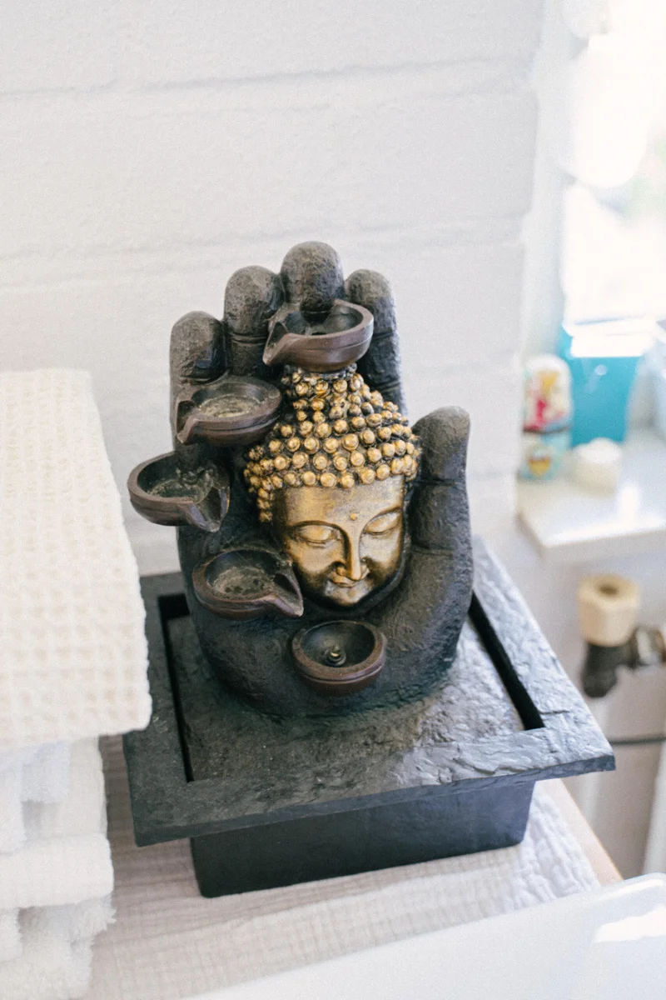

Voor fijne, verzorgde voeten. Hieronder zie je wat ik voor je kan doen en wat het kost.
Basis pedicure
€35
Een complete voetverzorging in mijn praktijk, met een korte voetmassage als zachte afsluiting.

Met aandacht, tot in de kleine details.
Dit zit er allemaal bij
Voeten desinfecteren
Nagels knippen en mechanisch afwerken
Overtollig eelt verwijderen
Likdoorns en kloven verzorgen
Ingegroeide nagels behandelen
Verdikte nagels afvlakken
Nagelomgeving reinigen en verzorgen
Een korte voetmassage
Liever bij jou thuis?
Ambulant pedicure
€35
Dezelfde basisbehandeling, maar dan in je eigen vertrouwde omgeving. Fijn als je minder mobiel bent of liever thuis blijft.
Stuur me je woonplaats, dan bespreken we de mogelijkheden en eventuele aanvullende kosten vooraf.
Even ontspannen
Voetflexologie massage
€40
Een rustig moment met alle aandacht voor je voeten. Neem gerust contact op als je wilt weten of dit iets voor jou is.
Een extraatje
Nagellak verwijderen of aanbrengen €5 per extra behandeling
Neem maar plaats.

Een beetje rust ♡
Aangenaam, ik ben Caroline
Een fijne plek, gewoon bij mij thuis.
Mijn praktijk aan huis in Nijmegen is een persoonlijke, rustige plek. Geen gehaast: ik luister naar je en verzorg je voeten met zorg en oog voor detail.
Of je nu last hebt van eelt of likdoorns, of gewoon graag frisse, verzorgde voeten wilt: je bent van harte welkom, ook als je voor het eerst komt.
Een zachte afsluiting
Tijdens de behandeling gebruik ik mijn eigengemaakte voetencrème van bijenwas en goudsbloem. Heb je een allergie of gevoelige huid? Geef het vooraf even aan.
Tot gauw, Caroline ♡
Nog even dit
Goed om te weten
Staat je vraag er niet bij? Je mag me altijd even appen of bellen.
Hoe maak ik een afspraak?+
Bel me op 06 2724 7221, stuur een WhatsAppbericht of mail me. Samen plannen we een moment in. Je afspraak staat vast zodra we die samen hebben bevestigd.
Hoe lang duurt een behandeling?+
Dat hangt af van de behandeling en wat je voeten nodig hebben. Bij het maken van je afspraak bespreken we hoeveel tijd we inplannen.
Kan ik iets vragen vóór mijn eerste bezoek?+
Natuurlijk. Als je twijfelt over een behandeling of vragen hebt over parkeren of toegankelijkheid, neem dan vooraf gerust contact op. Ik denk graag met je mee.